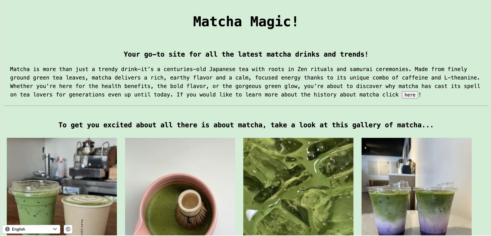
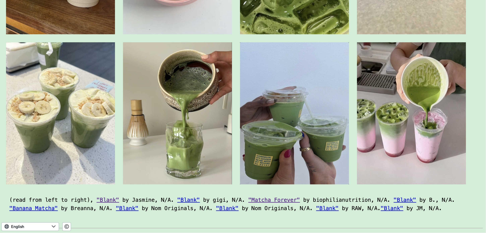

I used the knowledge of HTML and styling with CSS to make this work. This piece represents my best work because I had the freedom to customize it and express my creative vision fully. One of the aspects I take the most pride in is the design's visual appeal. I considered what would attract me to a website and aimed to reflect that in my creation. The standout feature of this work is the selection of images I incorporated into the gallery. The images entice the consumer to continue exploring the website.
 